Índice
O que é energia orgone?
Estamos intuitivamente familiarizados com o conceito energia da vidae dependendo do contexto existem diferentes palavras usadas para isso. Os índios dizem Prana,os chineses dizem Qi,os judeus dizem Ruach,Franz Mesmer diz Magnetismo Animal,Henri Bergson diz Elan Vital,Nazistas dizem Vril,mas este artigo é sobre Orgone qual é o que Wilhelm Reich chamou. O orgone é diferente de todas as outras energias listadas acima, no sentido de que é baseado em observações científicas de laboratório. Como a pesquisa do Orgone gira em torno dele, começaremos com sua história.
Wilhelm Reich estudou psicologia com Sigmund Freud, o pai da psicanálise, que centra seu modelo de psicologia humana na sexualidade. Freud postulou que existia uma energia sexual biológica, que ele chamou de Libido.Freud admitiu que a libido era algo sobre o qual só podíamos especular, a energia sexual sempre permanecerá uma ideia não comprovada.
Seu aluno, Wilhelm Reich, tinha ideias diferentes. Ele mediu as correntes elétricas do corpo com um osciloscópio [1] e descobriu que não só podia identificar as zonas erógenas, como também medir sentimentos de prazer.A energia que ele estava vendo estava sempre presente quando o prazer era sentido, e sempre que o prazer era experimentado, a energia era medida.
Aborrecimento era sinônimo de desaparecimento da energia sexual.Quando ocorre um estímulo desagradável, a energia se retira para outras partes do seu corpo.
Neste momento, ele teve que deixar a Áustria, pois a situação política se tornou insustentável para ele. Mudou-se para a Alemanha, Suécia, Dinamarca até se estabelecer em Oslo, Noruega, onde continuou a estudar a energia que descobriu, que supostamente existiu em formas de vida mais simples também, então era hora de dar uma olhada.
Ele construiu o que poderia ter sido o melhor microscópio do mundona época [2],[3]
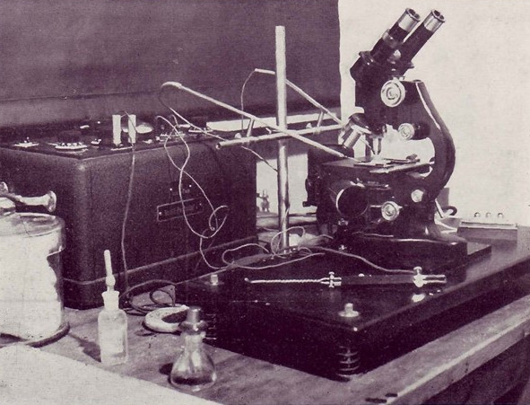Com seu microscópio, Reich observou que esterilizado amostras de grama, sangue, areia e carvão se desintegraram em vesículas pulsantes de luz azul.Ele chamou esses Bíons.
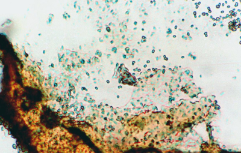Ele observou como os bíons estavam se movendo, aparentemente por conta própria [4] e que eles poderiam se unir paraformam organismos protozoários simples,e quando tentou esterilizar as amostras, a desintegração em bíons foi ainda mais rápida e aumentou sua atividade. Reich postulou que os bíons são um estágio transitório entre o vivo e o não vivo. A série de experimentos que ele conduziu [4] deixa claro que ele testemunhou uma energia, que agia como vida: reunindo-se negentropicamente em crescente complexidade.
Em outras palavras,"energia vital" não é um produto da vida, é o contrário.Se algo o matar, a energia vital de você passará para novas formas de vida.
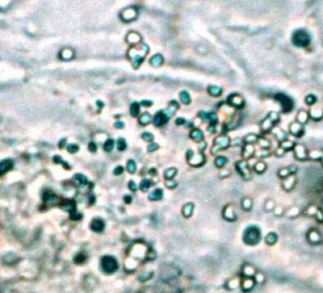Muitos métodos diferentes foram bem sucedidos na produção de bíons, desde metais quentes vermelhos brilhantes para plantas em decomposição poderia ser usado para observar a decomposição em bíons em seu microscópio.
Uma amostra de bíon em particular, produzida a partir de areia de praia aquecida, tinha propriedades incomuns: no escuro, irradiava uma luz azul suave, quando segurada na mão, uma sensação elétrica podia ser sentida, ferramentas de laboratório próximas ficavam magnetizadas, os funcionários do laboratório ficavam bronzeados sob suas roupas e quando uma pequena quantidade era colocada ao lado de bactérias, os bíons fortemente radiantes os imobilizavam e os matavam.
Ele o nomeou Energia orgone em parte porque veio dos estudos do orgasmo, mas também porque a energia pode carregar a matéria orgânica. Para uma réplica moderna de suas observações de Bions acompanhada por uma bela música.
Tudo isso foi, é claro, altamente controverso na época. A maioria dos cientistas contemporâneos ridicularizou-o e assumiu que apenas a configuração de experimentos descuidados e não estéreis poderia explicar os resultados. A Noruega acabou mudando suas leis para banir Reich [5] e ele se mudou para Nova York.
Acumulador de orgônio
Agora, se for estudar algo uma energia passageira, a primeira prioridade é atrair, isolar e concentrar a energia. Reich descobriu que os materiais orgânicos atraem, absorvem e retêm a energia orgone. Por outro lado,os metais se atraem, mas não podem manter uma carga o que os faz atrair e repelir Orgone em todas as direções.
Essas propriedades são suficientes para construir uma construção que atraia o Orgone atmosférico e os concentre: por ter camadas alternadas de material orgânico e metálico. Reich construiu caixas de acordo com esses princípios, que ele chamou de Acumuladores de orgônio.
Quanto mais camadas você tiver, mais poderoso ele será. 3 camadas podem se concentrar 5 vezes a energia orgone como o ambiente adjacente e 10 camadas podem alcançar 15 vezeso nível de energia circundante [7]
Quando você se senta em um acumulador de orgone por um tempo, pode sentir um calor, relaxamento e às vezes uma pontada. A pele pode ficar vermelha e suar. Há uma sensação de 'brilho suave' e de bem-estar. Algumas pessoas que têm campos de energia muito baixos podem levar um mês ou mais de uso antes de serem recarregadas o suficiente para sentir esses efeitos.
Reich fez muitas observações incríveis de acumuladores de orgone, vamos começar com o mais conhecido.
Calor do nada?
Reich notou que seu acumulador de orgone gerava calor, o que ele verificou experimentalmente. Isso é chamado de Anomalia Térmica do Acumulador Orgone.
Por alguma razão, ele decidiu se aproximar do homem no mundo que tinha mais a perder desta descoberta,Albert Einstein.Ele lhe escreveu uma carta dizendo que tinha um assunto importante para discutir, a descoberta de uma nova energia cósmica com efeitos biológicos significativos.
Se de fato o calor fosse gerado 'do nada', então toda a nossa compreensão da física teria que ser redesenhada.
Reich se encontrou com Einstein por cinco horas e, antes de sair, deu a Einstein um pequeno acumulador de orgônio para que ele pudesse verificar a anomalia térmica por si mesmo. Einstein foi capaz de replicá-lo então ele passou duas semanas experimentando. Ele finalmente retirou sua declaração inicial de que funcionou, deixando seu assistente Leopold Infeld declarar que o calor foi medido por causa da convecção.
A explicação de Infeld realmente não faz sentido, e Reich explicou isso [8],[9], mas Einstein se recusou a comentar ou responder qualquer correspondência a respeito.
A anomalia térmica foi replicado muitas vezes em ambientes de laboratórios modernos [10] incluindo experimentos que provam especificamente que Einstein estava errado [10]
O gráfico acima mostra a temperatura do ar, 'calor adicionado comparado ao controle' e 'calor adicionado comparado ao ar' e como você pode ver acima, a temperatura anomalia é claramente independente da temperatura do ar.
Surpreendentemente, o gráfico também confirma claramente o ciclo diário de orgone que Reich havia notado décadas antes!
Outra coisa que Reich disse é que a anomalia térmica só está presente durante o bom tempo: céu ensolarado e claro. O experimento foi recriado durante o tempo chuvoso e nublado:
O ciclo orgonômico do clima funciona assim: quando está ensolarado,há muito orgone cósmico grátis no ar, portanto, um acumulador de orgone é muito eficaz para concentrar a energia livre. Quando esta chovendo, nublado ou à noite, o orgone cósmico livre se retira para a água.
Uma das maneiras que Reich mediu a concentração de Orgone foi o tempo de descarga de um eletroscópio [12] e isso lhe permitiu completar os seguintes experimentos, que mostram aciclo de pulsação orgone entre água e ar.
Como você pode ver acima, existe uma relação inversa clara entre o tempo de descarga eletroscópica na água e no ar [13]
Quando comparamos a anomalia térmica e a descarga eletroscópica descobrimos que eles variam de acordo um com o outro,apenas como esperado.
Medidor de orgônio
Reich inventou o dispositivo abaixo para medir Orgone. Não prova a existência de energia orgone pelo fato de funcionar, mas sim as variações em seus valores de medição. Mais sobre isso mais tarde.
Quanto mais forte a concentração de Orgone, mais brilhante a lâmpada(B) foi iluminada.
Hoje existe uma empresa chamada Heliognose que desenvolveu uma versão moderna deste dispositivo, custa$ 399 e é chamado de Medidor de Energia Vital Experimental LM4.
Como os experimentos de Bion mostraram o quão biologicamente ativa a energia Orgone era, e a invenção do Acumulador Orgone permitiu que ele concentrasse a energia, ele tinha tudo o que precisava para funcionar. Experimentos de planta spara medir os efeitos do Orgone no crescimento de brotos.
Inúmeros experimentos foram concluídos [14],[15],[16] e os resultados são tipicamente cerca de +30% nos parâmetros de crescimento. A produção de frutos aumenta ainda mais. Diferenças qualitativas [15] são frequentemente observadas em frutos de plantas com sementes tratadas com orgone.
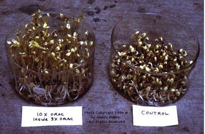 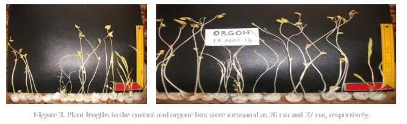 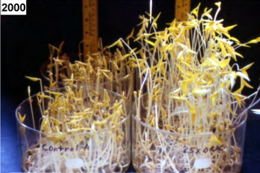 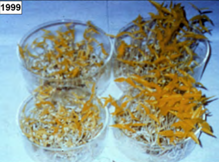 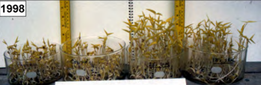Leis da Orgonomia
1. Orgone está pulsando
2. O orgone penetra toda a matéria, mas em velocidades diferentes
3. Orgone tem massa, peso e inércia insignificantes
4. Orgone preenche todo o espaço e está em toda parte
5. O orgone é atraído pela água
6. A água é atraída pelo orgone
7. O orgone é excitado por energias secundárias, como eletromagnetismo e energia nuclear
8. Quando está concentrada, a energia orgone é frequentemente azul-violeta
9. A matéria se origina do Orgone
10. Forças da física (eletromagnetismo, nuclear, gravitacional, etc) são secundárias
11. O eletromagnetismo se origina do Orgone
12. O orgone é influenciado pela radiação solar
13. O orgone é influenciado pela hora do dia e pela estação
14. O orgone é influenciado pela umidade, temperatura, pressão barométrica
15. O orgone é absorvido por substâncias orgânicas
16. O orgone é absorvido e logo depois refletido pelos metais
17. Orgone se move mais rápido em altitudes mais altas
18. O orgone é acumulado naturalmente nos organismos vivos pela ingestão de alimentos, respiração e através da pele
19. Concentrações de orgone mais altas atraem concentrações mais baixas até atingir a carga máxima permitida do sistema, após o que, em um sistema em condições saudáveis, é descarregado para o exteriorRadioatividade
O orgone tem uma relação complicada com a radioatividade. Há uma interação direta entre os dois. Abaixo você pode ver como um acumulador de orgone distorce o campo de radioatividade de fundo [17]
Abaixo você pode ver que a perturbação na radioatividade é sazonal e alinhada com as direções cardeais, exatamente como seria de esperar com um acumulador de orgone.
O acima não é importante apenas porque prova (novamente) que o orgone é real e mensurável, mas especificamente que orgone amplifica a radioatividade que pode ser altamente perigoso.Se você mora perto de uma usina nuclear ou de outras fontes de radioatividade, não deve construir um acumulador de orgone.
Efeitos fisiológicos de um acumulador de orgone
Reich observou que, quando alguém se sentava em um acumulador de orgone, desenvolvia uma febre funcional de 0,2°C - 0,5°C por um curto período depois, graças ao aumento da atividade biológica. Isso foi replicado muitas vezes [17],[18] incluindo estudos placebo com caixas de controle.
Reich desenvolveu um método de diagnóstico chamado Exame de sangue Reich que mediu como as células do sangue se desintegravam em bíons. Muitos médicos contemporâneos adotaram isso, então existem centenas de relatos de casos documentados [19] disponíveis. Reich disse que se o paciente se sentasse em um acumulador de orgone, a decomposição das células sanguíneas poderia ser bastante reduzida.
Replicações modernas mostram que ele estava certo de que carregar uma amostra de sangue em um acumulador de orgone evita a deterioração [20] , como você pode ver na imagem abaixo.
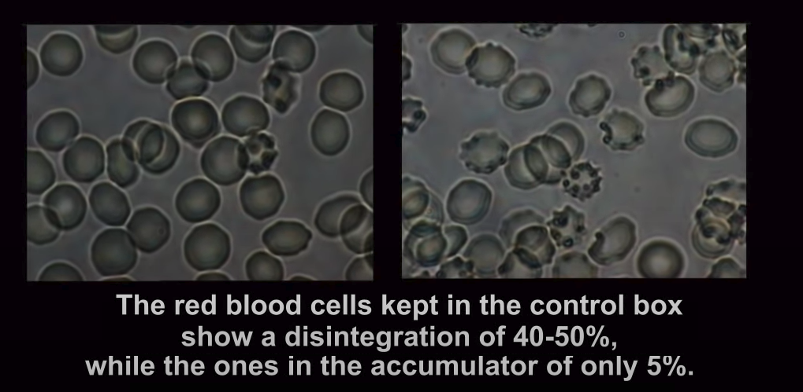Existem alguns estudos com ratos bastante incríveis. Por exemplo, ratos que tiveram câncer tiveram suas vida útil multiplicada quando tratado dentro de um acumulador de orgone por uma hora diária. Este experimento foi replicado quatro vezes [21]
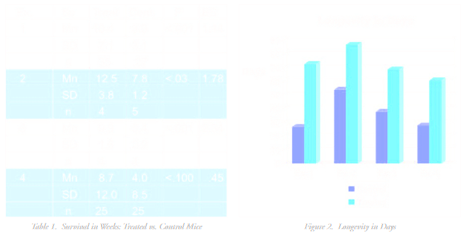O efeito sobre câncer e ratos foi tão impressionante que acelerou a decisão de tentar acumuladores de orgone em seres humanos. Pacientes com câncer terminal sem chance de sobrevivência conseguiram ter seus tumores reduzidos até desaparecerem [22], mas os pacientes ainda morriam, levando Reich à hipótese de que os tumores eram apenas a manifestação física de um problema mais profundo.
Ratos com feridas apresentam uma variação sazonal [23] na velocidade de sua cicatrização. Isso não é surpreendente no paradigma orgônico.
Quando alguns dos ratos com feridas foram tratados em um acumulador de orgone,eles curaram 10-12% mais rápido e este efeito só estava presente quando o tempo estava ensolarado [24] este efeito foi estatisticamente altamente significativo(p < 0,002).
O uso médico de acumuladores de orgone era popularna década de 1950. Centenas de acumuladores de orgone foram construídos, uma associação de médicos Orgonômicos foi formada e uma revista científica onde todos compartilhavam relatos de casos e descobertas empíricas de orgonoterapia médica.
Como a orgonoterapia parece aumentar a energia de todo o organismo, descobriu-se quebenéfico para quase qualquer problema de saúde. No entanto, foi contraindicado para pessoas com tumores cerebrais, glaucoma, epilepsia ou pessoas que sofrem de ataques apopléticos. No caso dos tumores cerebrais foi porque a cicatrização do tumor fez com que ele inchasse, aumentando a pressão intracraniana.
Perseguição
A FDA entrou com uma liminar contra Reich em 1954 [25] que afirmava que todo acumulador de orgone deveria ser destruído, e todo livro, papel, notas de laboratório, documento ou carta que contivesse a palavra "orgone" deveria ser queimado.
Por que eles fizeram isso? Reich certamente nunca alegou curar qualquer doença, e os médicos orgonômicos geralmente diagnosticavam doenças que a medicina alopática clássica não conseguia, e o que eles fizeram então? Encaminhavam pacientes para hospitais regulares.
Como eles não estavam deturpando nenhum benefício potencial do tratamento e não dissuadiram ninguém de usar os cuidados de saúde regulares, qual é o mal?
Como mencionado anteriormente, Reich já havia fugido da Áustria, Alemanha, Dinamarca, Suécia e Noruega. Ele estava cansado de correr.
Ele ignorou a ordem judicial, não destruiu nada e continuou com os negócios como de costume, exceto que ele se armou, preparando-se para uma batalha final, continuando seu trabalho científico até seu último dia.
Depois que ele foi preso, ele optou por se representar no tribunal.
"Minha posição factual no caso não me permite entrar no caso contra a FDA, uma vez que tal ação implicaria a admissão da autoridade deste ramo especial do governo para julgar a energia orgone cósmica primordial e pré-atômica"
A declaração de defesa inicial de Reich enfatizou que ele realmente violou a ordem de liminar. O juiz Sweeney o advertiu: "Você está praticamente se declarando culpado"
Reich insistiu que a liminar"teve que ser violado".Reich chamou seu assistente como testemunha de defesa e lhe disse:
"Diga ao júri, se eu estava pronto para morrer no verão passado"
Juiz: "Ele não pode saber disso"
Reich: "Você preparou um túmulo para mim?"
Objetos da acusação: "Isso é ridículo"
Reich:"Não é ridículo se você está nele"
O juiz decidiu a favor do FDA, então eles queimaram quase seis toneladas de livros e notas de laboratório.Reich morreu em sua cela de prisão poucos dias antes de solicitar a liberdade condicional.
Michael Silvert, seu assistente também ficou encarcerado até 1957, pouco depois de ser libertado 'tirou a vida'
A FDA certamente fez disso uma prioridade máxima [26] 4% do seu orçamento para toda a década foi gasto em rastrear e destruir cada acumulador de orgone. Um dos piores casos de censura da história moderna.
Do que eles tinham tanto medo...?
Água
Uma vez que a água pode absorver energia orgone e reter uma carga por muito tempo, então certamente algo deve mudar de forma mensurável na água quando ela é armazenada dentro de um acumulador de orgone, em comparação com um invólucro de placebo?Sim, isso é fácil de medir de várias maneiras.O mais incrível é o seguinte experimento, realizado por James DeMeo na Universidade do Kansas, onde uma placa de Petri de água foi deixada dentro de um acumulador de orgone (e uma caixa de controle).
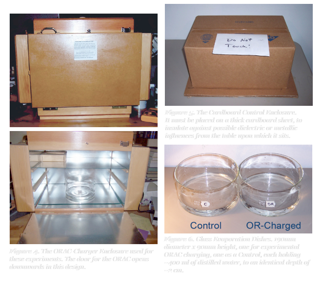A água foi medida com um espectrógrafo, sintonizado especificamente para luz de baixa frequência (UV-C). Um espectrógrafo é um instrumento que mede a luz e é comumente usado para identificar o conteúdo molecular, pois diferentes átomos podem ser identificados por suas assinaturas espectrais.
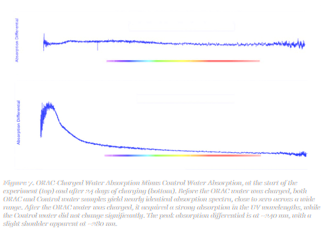No início, a absorção de luz de ambas as amostras era muito semelhante, mas como você pode ver, houve uma diferença altamente significativa após carregar a água em um acumulador de orgone.
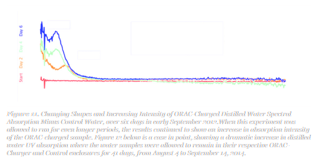Como você pode ver no gráfico acima, quanto mais tempo você carrega água em um acumulador de orgone, mais forte se torna a absorção de luz orgonótica [27]
Leve
O que é ainda mais chocante, é que a água carregada de orgônio emite luz!Isso também é medido através de um espectrógrafo, e antes de carregar a água não emitia luz.Quanto mais tempo a água era carregada, mais forte a luz se tornava.
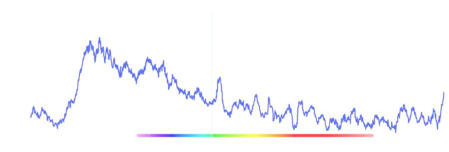Amostras de água da chuva e neve derretida foram testadas e também emitem luz, com espectros de fluorescência idênticos! [27]
Isso pode parecer um resultado chocante, mas na verdade é exatamente o que se esperaria, de acordo com a teoria Orgone. Reich fez experimentos na década de 1950 com Tubos Vacor,que é o que ele chamou de tubos de vácuo que ele carregou com energia orgone. Ele foi capaz de iluminá-los, segurando a mão perto deles. Na verdade, foi assim que o medidor de orgone foi inventado!
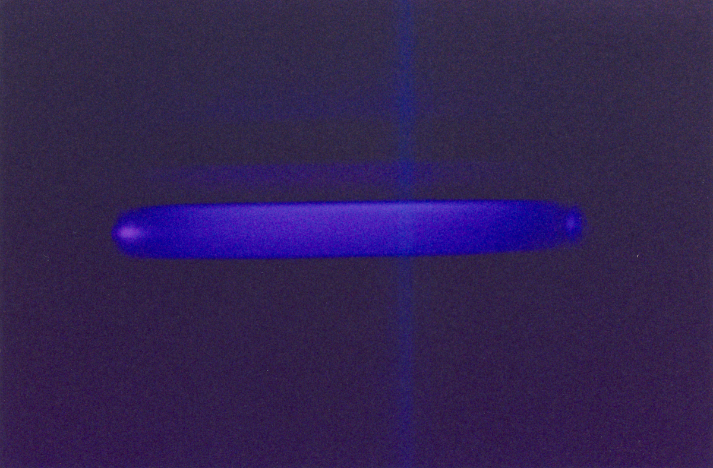Acima, você pode ver uma réplica moderna dos experimentos do Vacor Tube por DeMeo [27], onde um tubo de vácuo carregado de orgone foi feito para iluminar com movimentos da mão perto dele. A fotografia é tirada com uma exposição de 20 minutos em uma câmara escura.
Se você comparar o gráfico de fluorescência da água com as cores de iluminação do tubo vacor (é uma fotografia colorida normal!) e inúmeras observações de Reich, é evidente que a cor "padrão" típica da energia orgone é azul.
Sem comparação, a maneira mais poderosa de excitar a energia orgone e fazê-la iluminar é combiná-la com a radioatividade.Não faça isso.Reich fez um experimento chamado ORANUR Experiment, que é uma das histórias mais incríveis que você já leu.
A razão pela qual eu falo sobre radioatividade é por causa do que acontece quando a água está perto de uma radioatividade forte. Os físicos convencionais chamam isso de Radiação Cerenkovmas da teoria do orgone diríamos simplesmente que é água carregada de energia orgone (energia Oranur para ser preciso, é o que chamamos de energia orgone quando é excitada pela radioatividade).
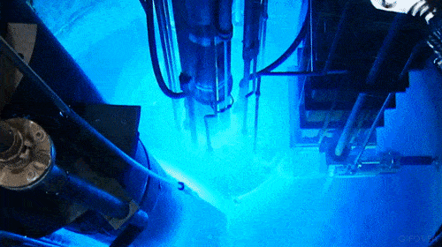Parece bem legal, certo? Não acho que os cientistas convencionais entendam todas as implicações do que estão fazendo. O tempo vai dizer.
Enfim, vamos falar mais sobre a cor azul no dia a dia. À luz dessas descobertas científicas, é hora de reexaminar algumas coisas.O gelo é azul.. às vezes.
A ciência convencional diz que isso acontece por causa de refração da luz.Mas agora que sabemos que a água pode ter vários níveis de fluorescência azulisso pode ser explicado de outra forma. Você apostaria que o gelo azul tem maior fluorescência azul do que o gelo branco? Eu poderia.
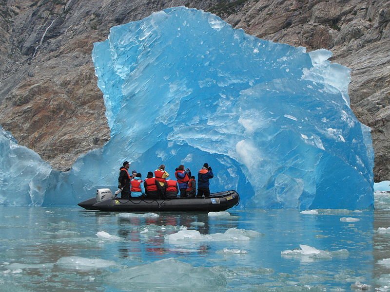A água é azul.. às vezes.
A luz azul é refratada em um ângulo mais alto do que qualquer outra cor, o que significa que ela se espalhará mais, então muitas coisas terão um "halo azul" ao seu redor. Compare a dispersão da luz dos lasers vermelho e azul abaixo como exemplo.
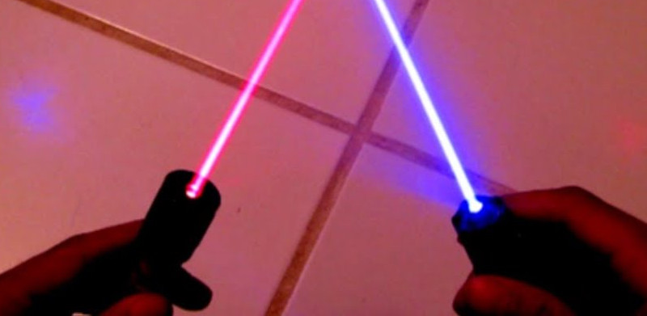Portanto, os campos de luz azul vistos em microscópios, fotografias etc. são sempre assumidos como um fenômeno puramente óptico, mas talvez também obscureça algo mais acontecendo? Tenha isso em mente enquanto assistimos a mais algumas fotografias.
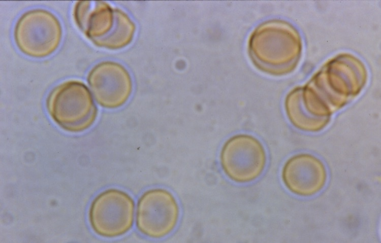As células têm uma aura azul ao seu redor.Isso é refração da luz ou um campo de energia visível? A foto abaixo é da Grécia, onde a fluorescência azul pode ser vista.Isso dificilmente pode ser explicado com a refração da luz.
O céu é azul.. às vezes.Pode ter diferentes intensidades da cor azul. Existem grandes diferenças regionais nisso, e elas revelam consistentemente os níveis de fluxo de orgone nessa área. Você não verá um céu azul intenso e profundo acima de um hospital, mas o verá acima de uma cachoeira. Tenho vasta experiência empírica com a criação de microclimas de céu mais azul usando orgonite e cloudbusters. Olhe para o céu acima de você, há muito a aprender.
.jpg)
A maioria das fotografias do espaço mostra halos de luz azul. Refração da luz ou fluorescência?
É assim que a Terra se parece do espaço.

NASA, segundo eles mesmos,estão gastando tempo e dinheiro no photoshop de fotos da Terra para que pareça abaixo, afinal, eles estão apenas removendo ilusões de ótica, refração da luz, certo?
Não é como se eles fossem mentir para nós, certo? Certo? Temos coisas incríveis para aprender olhando para o céu e o espaço através de um paradigma orgonótico.
Nuvens
Reich descobriu, e DeMeo mais tarde replicou [28] que existe um ciclo mensurável de evaporação da água aumentando e diminuindo dependendo da carga de orgone atmosférica.
Isso soa como uma coisa pequena, mas implica que Orgone está alimentando diretamente o ciclo da água!
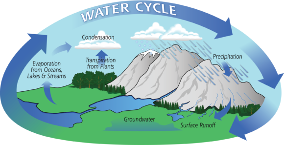O leitor apto talvez já tenha percebido isso quando afirmei anteriormente que a água é atraída pelo orgone, o orgone é atraído pela água e que existem ciclos diários e sazonais de orgone.engenharia orgone cósmica.Considere uma avalanche: quando neve suficiente se acumula na encosta de uma montanha, o menor movimento pode desencadear um enorme deslizamento de neve. O mesmo vale para a água atmosférica, às vezes o ciclo da água pode ficar 'travado' que está intimamente ligada à presença de energia negativa (chamada "DOR" em orgonomia).
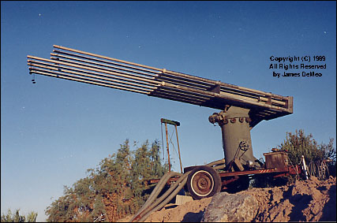Grandes hastes de metal irão efetivamente extrair energia do céu ou projetar energia nele. Reich construiu grandes cloudbusters [29] que ele efetivamente usou para o esverdeamento do deserto e redução da seca. Os cloudbusters reichianos não são um brinquedo. Não os use a menos que você saiba exatamente o que está fazendo. É fácil começar uma tempestade. Houve uma tempestade induzida por nuvens na Itália, onde alguém realmente morreu.
Parece incrível e difícil de acreditar, mas os cloudbusters foram estudados cientificamente por DeMeo [30]
Você vê aqueles lagos transbordantes na foto de satélite do deserto do Saara? Cloudbusters foram usados para transbordar o Nilo para criá-los. Esses lagos estão secos desde 5000 aC, de acordo com as medições espectroradiométricas da NASA.
Acupuntura
Cloudbusting foi descrito como acupuntura para o céu, e a equivalência humana é realmente estudada na ciência orgonótica! Leon Southgate realizou um experimento duplo-cego em que tratou pacientes com uma agulha de acupuntura comum e uma modificada de aparência idêntica que tinha camadas sobrepostas de metal e material orgânico, então era um acumulador de orgone em miniatura. A agulha de orgone teve um efeito significativamente maior sobre os indivíduos em comparação com a agulha de placebo [31]
Instruções de construção
Aqui está um guia completo para montar um acumulador de orgone. Não é fácil, mas também não é exatamente difícil. Se você é uma pessoa prática, pode fazê-lo facilmente. No entanto, tenha cuidado com os acumuladores de orgone, pois eles acumulam energia nas proximidades, portanto, tenha cuidado ao usá-los perto de eletrônicos ou outras fontes de energia negativa. Orgonite é muito útil aqui. Usar acumuladores de orgone e cobertores na natureza ou perto dela é sempre preferível.
Como sentir a energia orgone
Coloque as mãos à sua frente, a cerca de meio metro de distância, as palmas voltadas uma para a outra. Comece a aproximá-los sem realmente tocá-los. Quando suas mãos estão próximas uma da outra, você pode sentir a sensação familiar de calor. Agora observe que outros tipos de sensação você sente; feche os olhos para ajudá-lo a se concentrar. Mova suas mãos para frente e para trás, mais e mais longe, mas observe particularmente o que você sente quando suas mãos ficam a 6-12 polegadas de distância. Você pode começar a notar uma sensação incomum que alguns descreveram como formigamento ou pressão ou de natureza magnética.Isso é orgônio.
Quando você tira uma foto de raio-x com o campo de orgone entre as palmas das mãos excitado após o exercício anterior, o orgone bloqueará ou absorverá a radiação, então parecerá que você tem uma placa de metal entre as mãos.
Referências
- [1] The Bioelectrical Function of Sexuality and Anxiety
- [2] Reich's Microscope
- [3] 1937 Microscope Catalogue from Reichert
- [4] The Bion Experiments
- [5] Wikipedia: Wilhelm Reich
- [6] How to Build an Orgone Accumulator
- [7] Orgonics.com
- [8] The Reich-Einstein Affair
- [9] "A Bombshell in Science"
- [10] Orgone Thermal Anomaly: Replication by DeMeo
- [11] Orgone Thermal Anomaly: Replication by Correa
- [12] Orgone as a Motor Force
- [13] Atmospheric Orgone Pulsation: Air & Water
- [14] Orgone & Sprouting (Oat Seeds)
- [15] Orgone & Sprouting (Mung Beans)
- [16] Orgone & Sprouting (Soybeans)
- [17] Orgone Accumulator & Effects on Human Physiology
- [18] Orgone Accumulator: Parasympathetic Activation
- [19] The Reich Blood Test: Clinical Correlation
- [20] Orgone Evidence: The Reich Blood Test
- [21] Orgone & Cancer
- [22] The Cancer Biopathy
- [23] Orgone & Wound Healing In Mice (Part 1)
- [24] Orgone & Wound Healing In Mice (Part 2)
- [25] FDA Injunction Against Wilhelm Reich
- [26] Wilhelm Reich Persecution & Death
- [27] Orgone & Spectrographic Changes In Water
- [28] Water Evaporation Inside Orgone Accumulators
- [29] CORE (Cosmic Orgone Engineering)
- [30] Research Summary: Cloudbusting for Drought-Abatement
- [31] Orgone & Acupuncture: Double-Blind Study
- [32] Experimental Demonstration of Orgone Energy
- [33] Orgone & Electrical Capacitance
- [34] The ORANUR Experiment (MUST READ!)